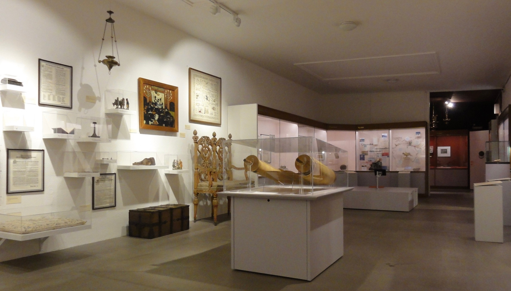

Das jüdische Leben in Basel, nach Zürich und Genf die Schweizer Stadt mit den drittmeisten jüdischen Einwohnerinnen und Einwohnern, ist alles andere als museal: Wer durch das Quartier am Ring westlich der Grossbasler Altstadt schlendert, trifft immer wieder auf Trottinett fahrende jüdische Schülerinnen auf dem Nachhauseweg, orthodoxe Frauen mit Perücke und Jupe, Männer mit Kippa. Es gibt mehrere Synagogen, koschere Gaststätten und jüdische Läden. Gleichzeitig bleibt ein Grossteil des jüdischen Alltags, der sich nicht oder erst auf den zweiten Blick von jenem der nichtjüdischen Schweizerinnen und Schweizer unterscheidet, unsichtbar. Wer mehr darüber erfahren will, begibt sich mit Vorteil ins Jüdische Museum der Schweiz mit seiner «im europäischen Vergleich erstklassigen Sammlung» (Heidi Brunnschweiler Spoendlin).
Ältestes jüdisches Museum im deutschsprachigen Raum
Das Jüdische Museum der Schweiz wurde 1966, hundert Jahre nach der Teilrevision der Bundesverfassung, die den jüdischen Schweizern die volle Niederlassungsfreiheit gebracht hatte, eröffnet – und ist damit das älteste jüdische Museum im deutschsprachigen Raum. Während im Zweiten Weltkrieg die jüdische Bevölkerung wie auch deren geistige und materielle Kultur in weiten Teilen Europas fast vollständig ausgelöscht wurden, zeichnet sich das jüdische Leben in der Schweiz durch eine deutlich länger zurückreichende Kontinuität aus. Ziel der Museumsgründung, initiiert vom Verein Espérance und unterstützt durch den Schweizerischen Israelitischen Gemeindebund, war es denn auch, das reiche sachkulturelle Erbe der jüdischen Schweiz zu sichern und es, nicht zuletzt auch gegenüber der nichtjüdischen Schweiz, sichtbar zu machen. Grundstock bildete die Judaica-Sammlung des Basler Museums für Völkerkunde (heute: Museum der Kulturen Basel), die der Philologe und Volkskundler Eduard Hoffmann-Krayer (1864–1936) in den 1910er und 20er Jahren zusammengetragen hatte. Nach der Eröffnung der vorerst zwei Ausstellungsräume an der Kornhausgasse 8 im Sommer 1966 wurden in der Presse die nüchterne Objektpräsentation und die museographische Eleganz des neuen Museums gewürdigt.
Dauerausstellung 1966. (Bild: Wikimedia Commons/Moeschlin)
Dauerausstellung 2021. (Bild: David Zimmer)
Ausstellungsobjekte ins Hier und Heute holen
Der Standort, die – 2001 erweiterten – Ausstellungsräumlichkeiten und ein Teil der Vitrinen sind seit der Anfangszeit erhalten geblieben, doch die Dauerausstellung ist in den letzten Jahren moderat aufgefrischt worden und präsentiert sich heutigen Besucherinnen und Besuchern alles andere als verstaubt. Der Zugang zum Museum erfolgt über eine mit einem blau-weissen geometrischen Muster versehene Rampe und einen regelmässig mit Kunstinstallationen bespielten Innenhof. Im kleinen Eingangsbereich, der Kassen-, Aufsichts- und Garderobenraum zugleich ist, erhalten die Besuchenden ein Tablet mit einem wahlweise deutsch- oder englischsprachigen Audioguide, der in 55 Minuten durch die Ausstellung führt. Zu Wort kommen die Museumsdirektorin, ein Rabbiner, ein zehnjähriges Mädchen, eine Künstlerin, ein Stadtführer und ein Jurist, die jeweils ausgewählte Objekte vorstellen und die Bedeutung, die diese für sie persönlich haben, erläutern und gelegentlich auch kritisch kommentieren. Auf diese Weise werden ein subjektiver Zugang und ein Gegenwartsbezug geschaffen, die die Museumsobjekte aus den Vitrinen ins Hier und Heute holen.
Die Dauerausstellung ist in drei Themenblöcke gegliedert, die in je separaten Räumen mit unterschiedlicher Farbgebung angeordnet sind und verschiedene Antworten auf die Frage geben, was Judentum heutzutage bedeutet. Im rot gestalteten Raum zum Thema Kult wird die Religion als «Metronom des Lebens» vornehmlich mit Sakralobjekten für die jüdischen Feiertage, den Jahres- und den Lebenszyklus illustriert. Der weiss gehaltene Raum ist dem Thema Kultur gewidmet und zeigt das Judentum als Erfahrungsgemeinschaft. Prunkstücke sind der 2001 in Kaiseraugst gefundene Menora-Fingerring wahrscheinlich aus dem 4. Jahrhundert und eine Torarolle aus Kairo aus dem 14. Jahrhundert. Im blauen Raum (Betsaal) schliesslich, kuratorisch nicht ganz schlüssig mit dem Thema Feiertag überschrieben, wird das Judentum als eine Religion des Buches dargestellt. Dazu passt der inoffizielle Ausstellungskatalog «Jüdische Schweiz: 50 Objekte erzählen Geschichte» (mit einigen museumsfremden Objekten), der viele Hintergrundinformationen enthält und sich für eine vertiefende Lektüre anbietet.
Der aktuelle Museumsstandort an der Kornhausgasse 8. (Bild: David Zimmer)
Neuer Standort mit alter Geschichte
Das Jüdische Museum der Schweiz ist freilich mehr als seine Dauerausstellung und periodisch organisierten Sonderausstellungen. Zentral ist die Vermittlungstätigkeit in Form von regelmässigen kulturellen Veranstaltungen, Führungen, Publikationen und Onlineaktivitäten, die ein beachtliches Publikum erreichen. Viele, zumal grössere jüdische Museen in Europa haben in den letzten Jahren einen Cultural Turn hin zu Begegnungsforen für allgemeingesellschaftliche Debatten vollzogen, die jüdische Themen gelegentlich überschreiten. Angesichts der spezifischen Situation des Jüdischen Museums der Schweiz und dessen wertvoller Bestände setzt Museumsdirektorin Naomi Lubrich dagegen eher auf ein schweizbezogenes, materialkundliches Ausstellungskonzept, wie sie im Gespräch erläutert. Voraussichtlich 2023 wird das Jüdische Museum in ein vierstöckiges, 1852 als Tabaklager erbautes Gebäude unweit des Kollegiengebäudes der Universität Basel umziehen, wo sich im 13. Jahrhundert der erste jüdische Friedhof auf dem Gebiet der heutigen Schweiz befand. Bleibt zu hoffen, dass das Jüdische Museum in Basel durch gezielte Akquisitionspolitik die Repräsentativität seiner Sammlung für die verschiedenen Traditionen der jüdischen Schweiz weiter erhöhen und durch konsequente(re) Dreisprachigkeit seine Ausstrahlung auch in die französischsprachige Schweiz hinein vergrössern kann.
Der künftige Museumsstandort an der Vesalgasse 5 vor dem Umbau. (Bild: David Zimmer)
David Zimmer ist Alumnus der Universität Freiburg i.Ü.
Weitere Artikel von {{ author.author }} finden Sie hier:
Zur Vertiefung:
- Website des Jüdischen Museums der Schweiz, verfügbar unter: https://www.juedisches-museum.ch/de/ (08.05.2021).
- Battegay, Caspar/Lubrich, Naomi: Jüdische Schweiz: 50 Objekte erzählen Geschichte = Jewish Switzerland: 50 objects tell their stories, Basel 2018.
- Brunnschweiler Spoendlin, Heidi: «‹Gebt kund von eurem Volkstum, vom Schatz eurer Religion, eurer Überlieferung!›: zur Sammlungs- und Museumsgeschichte des Jüdischen Museums der Schweiz in Basel», in: Basler Zeitschrift für Geschichte und - Altertumskunde 103 (2003), S. 149–182, verfügbar unter: https://doi.org/10.5169/SEALS-118470 (08.05.2021).
- Kugelmann, Yves: «Museen ohne Publikum»: im Gespräch mit Naomi Lubrich, in: Tachles Podcast, 23:32 Minuten, verfügbar unter: https://www.tachles.ch/podcasts/museen-ohne-publikum (08.05.2021).